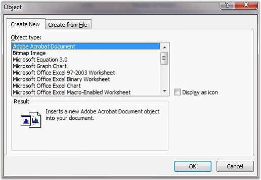

OLE object is used to make the content that is created in one program available in another program. To know what types of content you can insert, click Insert tab and select Object in the Text group.
 Note: Only installed programs that support OLE
objects appear in the Object dialog box.
Note: Only installed programs that support OLE
objects appear in the Object dialog box.
Essential DocIO supports insertion and extraction of these OLE objects with small piece of code in both .doc and doc formats. WOleObject class is responsible for manipulating OLE objects.
Class Hierarchy
ParagraphItem
|
WOleObject
Object Types
Objects can be either linked to the program or embedded in the program. Linked Objects remain as separate files and any changes made to them will be reflected immediately. On the other hand, Embedded Objects will be stored in the document that they are inserted and hence changes will not be reflected in them.
If you copy information as an embedded object, the destination file requires more disk space than if you link the information. When the file is opened on another computer, the embedded object can be viewed without having access to the original data. OleLinkType property of WOleObject is used to set the object type as Embed or Link.

Figure 70: Setting the OLE Object Type in the Object Dialog Box
Inserting Objects
DocIO provides various overloads for the AppendOleObject method to enable insertion of objects as bytes or streams by using a single line of code. The following overloads of the AppendOleObject can be used to insert an OLE object.
· AppendOleObject(byte[] oleBytes, WPicture olePicture, OleObjectType type)
· AppendOleObject(byte[] oleBytes, WPicture olePicture, string fileExtension)
· AppendOleObject(Stream oleStream, WPicture olePicture, OleObjectType type)
· AppendOleObject(Stream oleStream, WPicture olePicture, string fileExtension)
The following code examples illustrate insertion of an OLE object by using this method.
|
[C#]
paragraph.AppendOleObject(buffer, pic, OleObjectType.AdobeAcrobatDocument); paragraph.AppendOleObject(buffer, pic, "pdf"); paragraph.AppendOleObject(stream, pic, OleObjectType.Excel_97_2003_Worksheet); paragraph.AppendOleObject(stream, pic, "pdf"); |
|
[VB]
paragraph.AppendOleObject(Buffer, pic, OleObjectType.AdobeAcrobatDocument) paragraph.AppendOleObject(Buffer, pic, "pdf") paragraph.AppendOleObject(stream, pic, OleObjectType.Excel_97_2003_Worksheet) paragraph.AppendOleObject(stream, pic, "pdf") |
DocIO not only allows inserting objects through container, but also allows inserting objects from disk through file path by using the following overload:
· AppendOleObject(string pathToFile, WPicture olePicture, OleObjectType oleObjectFileType)
DisplayAsIcon
Essential DocIO provides support for embedding OLE objects in a Word document to display them as icons or content using the DisplayAsIcon property.
· If the DisplayAsIcon property is set to true, the OLE object in the Word document is displayed as an icon.
· If the DisplayAsIcon property is set to false, the OLE object in the Word document is displayed as content. This enables the Word document to dynamically update images based on the content present within the OLE object.
Note: Initially DocIO generated documents display
the icon (given image) in place of the embedded OLE object. By setting the
DisplayAsIcon property to true, the icon will not be updated after opening or
editing the OLE object using MS Word. However, setting the DisplayAsIcon
property to false will enable the Word document to update the icons dynamically
with the content after opening or editing the OLE object.
Following are the API details of this feature:
Public Constructor
|
Name |
Description |
|
WOleObject.WOleObject (IWordDocument) |
Gets the type of the entity. |
Public Properties
|
Name |
Description |
|
OleLinkType |
Gets the OLE link type (Embed or Link). |
|
OlePicture |
Gets the OLE picture. |
|
EntityType |
Gets the type of the entity. |
|
Container |
Gets the OLE container. |
|
OleStorageName |
Gets or sets the name of the OLE Object storage. |
|
LinkPath |
Gets or sets the link path. |
|
LinkType |
Gets the type of the OLE object. |
|
NativeData |
Gets the native data of embedded OLE object. |
|
PackageFileName |
Gets the name of file embedded in the package (only if OleType is "Package"). |
|
ObjectType |
Gets or sets the type of the OLE object. |
|
DisplayAsIcon |
Gets or sets the value indicating whether the OLE object is displayed as an icon or content. |
The following code example illustrates how to insert an OLE object in disk to a Word document.
|
[C#]
WordDocument document = new WordDocument(); document.EnsureMinimal();
// Loads the OlePicture from the file. WPicture pic = new WPicture(document); pic.LoadImage(Image.FromFile(@"logo.jpg")); pic.Width = 100f; pic.Height = 100f;
// Adding new OLE Object. document.LastParagraph.AppendOleObject(@"Startup.wav", pic, OleObjectType.Package); |
|
[VB.NET]
Dim document As WordDocument = New WordDocument() document.EnsureMinimal()
' Loads the OlePicture from the file. Dim pic As WPicture = New WPicture(document) pic.LoadImage(Image.FromFile(@"logo.jpg")) pic.Width = 100.0F pic.Height = 100.0F
' Adding new OLE Object. document.LastParagraph.AppendOleObject(@"startup.wav", pic, OleObjectType.Package) |
The following code example illustrates how to extract an OLE object from an existing document and insert it into a new document.
|
[C#]
WordDocument oleSource = new WordDocument("OleTemplate.doc"); WordDocument dest = new WordDocument(); dest.EnsureMinimal();
// Gets OLE object from source document. WOleObject oleObject = oleSource.LastParagraph.Items[0] as WOleObject; WPicture pic = oleObject.OlePicture.Clone() as WPicture;
// Inserts the OLE object into the destination document. dest.LastParagraph.AppendOleObject(oleObject.Container, pic, OleLinkType.Embed); |
|
[VB.NET]
Dim oleSource As WordDocument = New WordDocument("OleTemplate.doc") Dim dest As WordDocument = New WordDocument() dest.EnsureMinimal()
' Gets OLE object from source document. Dim oleObject As WOleObject = TryCast(oleSource.LastParagraph.Items(0), WOleObject) Dim pic As WPicture = TryCast(oleObject.OlePicture.Clone(), WPicture)
' Inserts the OLE object into the destination document. dest.LastParagraph.AppendOleObject(oleObject.Container, pic, OleLinkType.Embed) |
Notes: Currently OLE Object support is not
available in Silverlight application.